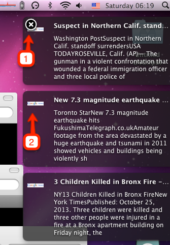
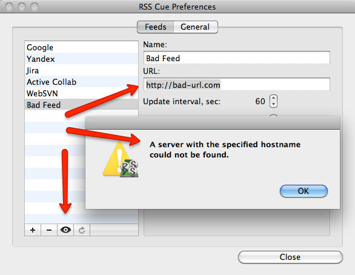
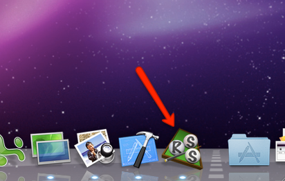
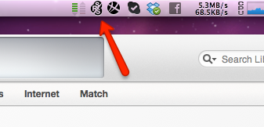
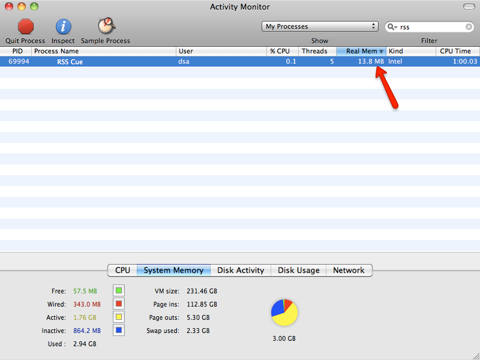
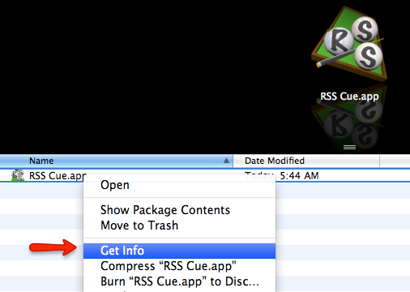
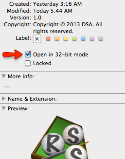

RSS is for News. Late News is not News. Too Many News are not News.
Skip this part full of grief and savage or just download the install package. There's nothing worth to waste your time reading the stuff below.
I can not live without RSS notification. Really. While working on the main document it is necessery to keep an eye on what's going on around: emails, issue tracking system comments, SVN repository updates, client's inquires. Even if i can not or i do not need to react immediately i am still wish to be informed the things are arriving and are handled. It calms. Or raises the alert in time, not hours or days ago i'll be able to crawl through the hundreds of emails. Yes, there are chances i miss something, but "something" is not equal "all". This is why i need an aggregator from the different sources and a system to notify me about the changes immediately
It's unbelievable but Mac is not able to help with this pretty simple demand.
The deceased Google Reader and its retarded reproductions were almost that i needed, but, listen, i do not want my extremely important notes to be buried among the thousands never read financial, political and humor articles. I want to see the notifications on some feeds immediately and read the rest of the garbage when i'll have a time. Yes, i know about the tags, folders and so on... but... What for? And how could it help me to do not see the pop-ups about Rush Limbaugh speeches during my work time? And besides those eaters of gigabytes make me outraged: a tool intended to improve the productivity becomes a gizmo causing me to spent a life watching at rounding ball.
Of course, there are few apps, the Google brings on "RSS notifier Mac os x". The question is - does anybody including the authors use them? None of them work well. Most do not provide login/password capabilities (say farewell to beloved Atlassian Jira), the others do not understand Atom feeds, and one is simple a junk. Ironically, the latter is the only that is paid.
Thus the idea of "Notifier the Wanted" was conceived
Observable.
Non intrusive.
Avoidable.
Comprehensive
Obvious.
Effective.

The notifications are clickable and will open the full article in the browser window. If there's an image or logo provided with the feed it is shown on left margin (2) to help the identification or the origin of the notification with a glance.
Unfortunately native Mac notifications can not be closed with a mouse or something. This is a reason I highly recommend install Growl Messaging which has been de-facto notification standard for years on Macs and lets the pop up to be removed with a click on the cross button (1).
1. A feed can have a nickname in order to reference it. Feel free to choose any.
2. Every feed has its own update frequency to balance between the urgency and message flooding.
3. No more than given number of the notification form this feed will be shown on the screen in time. The rest will stay in queue and be shown on next fetch. Yes, correct, it is possible some messages will stay in the queue forever if they arrive fast and this number is small, but showing too many notifications is the same as not showing them at all. From my experience i would set it to 1. It's enough. More than 3 is overkill.
4. It's strange, but login/password seems to be a feature nobody cares about. It is need to say only so-called "Basic" authorization is handled so far. It works for most (in fact all known) feeds, but in theory would fail on some.
5. There's no need to remove a feed if it should just be paused for a time. Pay attention the feed is created as disabled initially and must be enabled to run. The checkbox is also a substitution for bookmarks - disabled feeds are kept into settings ready to be launched on demand.
6. The informational panel with the state of feed. A Console application may be used to get more info — filter the log with "RSS Cue" or the nikcname of the torubleshooted feed.
7. Refresh button "unread"s the feed and makes the notifications to appear once more time on the next update cycle.
8. Test button allows to ensure the URL and login/passwords are correct just if you suspect something is not good:
1. On the launch the feed is read for the first time and contains the "news" from the past that is actuially is not news already, so why i need to view them? Eliminate the zombies with this checkbox.
2. During the computer startup many apps and windows are popping up so let's do not increase the blinking and buzzing with setting the delay for the very first notification.
3. Launch automatically on the next system reboot. Or exclude RSS Cue from the auto started items list
4. The switch defines the appearance of the notifier: either it is to be an accustomed doc icon:

or less intrusive small top menu item:

The clicking on any will show the Preferences panel or quit the application
The launched application will sit in the memory and check the feeds on the given schedule. It's proven to do not have memory leaks and generally should not take more than 15Mb of the RAM depending on the quantity and amount of the feeds.

As most of the Mac application the memory consumption may be significantly reduced by enforcing it to run in 32 bit mode in simple 2 clicks
First rigth click on the application icon in Finder to get Info
and next click on checkbox "Open in 32-bit mode
As a result the consumed memory will be decreased in nearly 1.5 times
Having trouble with RSS Cue? Use the New Issue button of the GitHub issue tracking system or try to connect me directy by email and probably i’ll help you sort it out.